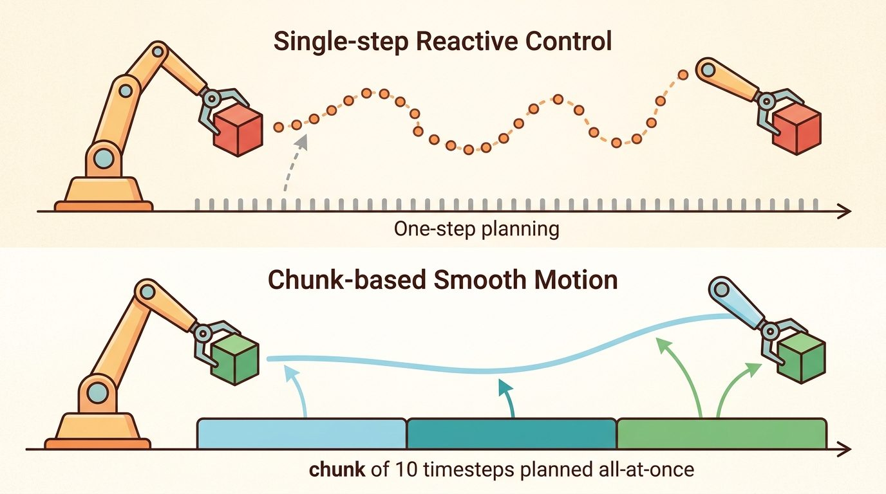
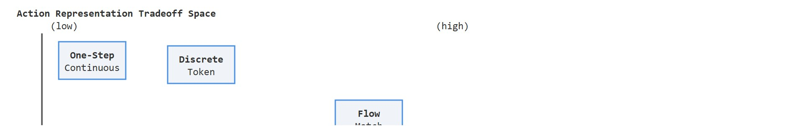

"The action representation you pick is a bet on what the task will punish you for getting wrong."
A Cautious Policy Interface

This section assumes familiarity with the five action families introduced in Chapter 22: one-step continuous actions (section 22.1), ACT chunking (section 22.2), diffusion-based sampling (section 22.4), flow matching (section 22.5), and discrete tokenization via VQ-BeT (section 22.6). The decision framework developed here is applied directly in section 23.6, where teleoperation data collection choices are constrained by the same latency and multimodality tradeoffs. The same tradeoffs recur in Part VII alongside robot foundation models and cross-embodiment generalization (Chapter 35).
A robot arm trained with one-step continuous actions can thread a bolt at 20 Hz but freezes when two valid grasp poses exist simultaneously. Switch to diffusion sampling and the multimodality problem vanishes, yet control latency triples and a safety filter can no longer veto individual joint commands. Every action family solves one bottleneck and introduces another. Right now, as manipulation policies scale toward general-purpose deployment, the choice of action representation is one of the most consequential early decisions a practitioner makes. Work through this decision guide and you will be able to read a robot-task contract, map its binding constraints to the right action family, and justify that mapping before committing to a training run. Figure 22.7B below plots all five action families on the two axes that matter most for this decision: control latency and multimodal expressiveness.

Two engineers feed the exact same bimanual demonstrations into their policies; one ships a robot that inserts a USB plug on the first try, the other ships a robot that lunges at the gap between two valid grasps and faults the controller, and the only thing they did differently was pick an action representation. By this point in the chapter you have seen five different ways to parameterize a robot's output: a single continuous action, an ACT chunk (ACT stands for Action Chunking with Transformers), a diffusion-sampled chunk, a flow-matched chunk, and a discrete behavior token (VQ-BeT, short for Vector-Quantized Behavior Transformer, which snaps each action to the nearest entry in a learned codebook). Each was motivated by a real limitation of the one before it, and each grew out of the broader imitation learning setting where a policy must reproduce demonstrated behavior. The question practitioners face is not which method is theoretically superior but which one fits a specific robot, task, and deployment constraint. A screwing task at 20 Hz with a low-cost arm has different binding constraints than a warehouse picking task at 5 Hz on a commercial manipulator. This section gives you a structured way to read those constraints and map them to an action family before you commit to a training run.
This section develops the technical contract for choosing an action representation: a decision guide into a usable mental model. First we define the object of study, then we connect it to the agent loop, then we test it with a compact implementation.
The key question in Choosing an action representation: a decision guide is practical: what must the agent know, what can it observe, what action is available, and what evidence shows that the action worked under the stated conditions?
A representation earns its place when it changes the measurable action interface. In choosing an action representation: a decision guide, the reader should keep asking which decision becomes easier, safer, or more reliable.
For Choosing an action representation: a decision guide, the practical design rule is to make the interface inspectable before optimization begins: inputs, outputs, units, latency, bounds, and failure labels should all be visible in the saved artifact.
The mechanism in Choosing an action representation: a decision guide is the contract between representation and action. Name what enters the module, what leaves it, which assumptions make that transformation valid, and which log would reveal a bad handoff.
To see the contract turn from an abstract checklist into a concrete verdict, run it against the very task that opened this section. Take a concrete case: an ALOHA bimanual cell inserting a USB-C plug at 20 Hz, where two valid wrist approaches (left tilt and right tilt) appear in the demonstrations. The binding constraints are a 50 ms control step and submillimeter contact tolerance. The snippet below scores each action family against those two numbers so the choice is made on the spec, not on reputation.
# Per-family fit for ALOHA USB-C insertion: 20 Hz (50 ms step), bimodal grasp.
step_budget_ms = 1000 / 20 # 50 ms control loop on the ALOHA arms
fwd_ms = 5 # one score-net forward pass on the deployment GPU
families = {
"one_step": {"latency_ms": fwd_ms * 1, "handles_bimodal": False},
"act_chunk": {"latency_ms": fwd_ms * 1, "handles_bimodal": False},
"diffusion": {"latency_ms": fwd_ms * 10, "handles_bimodal": True},
"flow_match": {"latency_ms": fwd_ms * 5, "handles_bimodal": True},
"vq_bet": {"latency_ms": fwd_ms * 1, "handles_bimodal": True}, # but quantizes contact
}
for name, f in families.items():
fits = f["latency_ms"] <= step_budget_ms and f["handles_bimodal"]
print(name, f["latency_ms"], "ms", "FITS" if fits else "rejected")Expected output: only flow matching satisfies both constraints once the precision gate eliminates VQ-BeT. Change the control frequency to 5 Hz (a 200 ms budget, typical of a warehouse pick on a UR5) and diffusion re-enters the feasible set, which is exactly the point: the binding constraint, not the model's expressiveness, decides the family.
Physical Intelligence's pi0 model applies exactly this constraint-first reasoning at deployment: it pairs a shared vision-language backbone with a flow-matching action head so a mobile manipulator can fold laundry and clear tables, where multiple valid grasp modes coexist and the multimodality constraint binds. Flow matching is chosen over diffusion specifically because the same expressiveness must run within the robot's onboard control budget rather than on a benchmark GPU. The decision was made on the latency-versus-multimodality tradeoff this section formalizes, not on which sampler scores highest in isolation.
The from-scratch fragment should expose the assumption behind representation choice across one-step, chunked, diffusion, flow, and tokenized actions under one evaluation manifest. For serious runs, use LeRobot, robomimic, ACT, Diffusion Policy, VQ-BeT, ALOHA, GELLO, or UMI with the same manifest and evaluator.
That single insertion verdict generalizes into a rule worth stating plainly before we walk the families one by one. The choice of action representation is not a model-quality decision; it is a systems decision forced by concrete engineering constraints. Consider a bimanual robot assembling a USB connector at 20 Hz, where each family imposes a different cost:
The representation you choose depends on which of those constraints is the binding one for your robot and task. Picking the most expressive family before reading the task spec is not good engineering; it is premature optimism dressed up as design. A representation chosen without reading the task spec is a solution in search of a problem, and the robot will find the mismatch before you do.
The decision guide is an engineering tradeoff between temporal abstraction, multimodality, latency, and controllability. A short horizon reacts quickly but may jitter. A long horizon carries intent but can become stale. A diffusion sampler handles multimodal actions but costs inference time. A discrete tokenizer can make behavior modeling easier but may erase fine contact details. The scale of these tradeoffs is concrete. A one-step continuous policy trained on bimodal grasping data averages the two valid approach angles and fails every insertion attempt. Feed the same demonstrations to a diffusion policy and success climbs sharply (Chi et al., 2023, reported 85% on comparable bimanual tasks), because the sampler picks one mode cleanly rather than committing to the invalid average. This is the mode-averaging trap, and it is the single most common reason practitioners switch from one-step to generative representations.
Imagine a GPS navigation app that has learned from thousands of drivers, half of whom turned left at a fork and half of whom turned right. If it picks the single direction that minimizes average regret across all those drivers, it sends you straight ahead into a ditch. A generative navigation system would instead keep both routes alive on a split screen and commit to one only once it has a reason to prefer one side. MSE (mean squared error, the loss that penalizes the average squared distance between a predicted action and the demonstrated one) training is the ditch-bound GPS; diffusion is the split-screen planner that preserves both valid options until the sampler is forced to choose.
The physical consequence is severe: a robot arm executing the averaged command moves toward neither valid grasp, contacts the object at an unsupported angle, and either drops it or triggers a force-limit fault that halts the controller. No amount of downstream correction recovers the attempt because the wrist is already in a configuration from which neither original mode is reachable without a full retreat. At 20 Hz the fault occurs within 50 ms of the first averaged command, before any safety filter can intervene.
The averaging happens during regression training. MSE loss penalizes every deviation from a demonstrated action equally, so the optimizer finds the single vector that minimizes total squared distance across all demonstrations. When two demonstrations show opposing approach angles for the same observation, that minimum-loss vector sits geometrically between them. The network is not confused; it does exactly what MSE asks. Diffusion and other generative representations avoid this trap by learning a conditional distribution over actions rather than a conditional mean. Both modes stay accessible at inference, and the sampler commits to one. In practice the scale difference is often large, though the exact ratio is task-dependent. A one-step MSE policy typically needs roughly 2,000 demonstrations to reach 80% success on a bimodal insertion task, because it depends on statistical noise to partially separate the two modes. A diffusion policy typically reaches comparable success on the same task with around 200 demonstrations, because it wastes fewer demos "canceling out" their mirror-image counterparts.
Chunking reduces jitter because a sequence of predicted joint positions forms a smooth trajectory that the low-level controller interpolates between, hiding the noisiness of any single prediction. The cost is staleness: if the environment changes mid-chunk (an object shifts, a grasp slips), the policy cannot react until the chunk expires. Diffusion adds multimodal expressiveness by iteratively refining a noise sample conditioned on the observation; the model never has to commit to a single mode during training, so it does not average two valid grasps into an invalid one. The cost is that each denoising step requires a full forward pass through the score network, and 10 to 20 such steps at inference multiplies the latency accordingly. Flow matching replaces the iterative Gaussian noise schedule with a straight-line interpolation between noise and data, reducing the number of integration steps needed to 3 to 5 while retaining multimodal coverage. Discrete tokenization sidesteps the latency problem entirely by doing nearest-neighbor lookup in a learned codebook (a fixed table of representative action-motion prototypes, where each demonstrated action is snapped to its closest table entry), but it introduces quantization error that is harmless for coarse motions and disqualifying for precision contact tasks.
| Representation | Use When | Watch For |
|---|---|---|
| One-step continuous action | Low-level control is stable and feedback is fast | Jitter, mode averaging, weak temporal intent |
| ACT chunk | Fine manipulation needs short plans and fast training | Chunk horizon, temporal ensembling, stale actions |
| Diffusion chunk | Valid behaviors are multimodal or contact-rich | Sampler latency and safety filtering |
| Flow-matched chunk | Fast generative sampling is a deployment constraint | Integrator error and vector-field extrapolation |
| Discrete action token | Motion primitives repeat across demonstrations | Codebook collapse and lost precision |
A common assumption is that a more expressive representation (diffusion, flow matching) is universally superior to a simpler one (one-step continuous) and should be the default choice in any robot learning project. That assumption fails in the embodied AI context because expressiveness carries a concrete inference-latency cost that can violate the hard real-time budget of the control loop. A diffusion chunk requiring 10 forward passes at 5 ms each adds 50 ms of latency; on a 20 Hz controller with a 50 ms step budget, that leaves no margin for sensing, safety checks, or communication, and the controller misses its deadline. The correct mental model is constraint-first: identify the binding constraint (latency, multimodality, precision, recovery window) from the task spec, then select the least complex representation that satisfies it. Expressiveness is a tool to unlock when simpler families fail on that specific constraint, not a default upgrade.
Input: Task specification with control frequency $f$ (Hz), action dimension $d$, observed multimodality flag $M \in \{0,1\}$, maximum inference budget $\tau$ (ms), and smallest safe recovery window $r$ (ms)
Output: Selected action representation $\pi^* \in \{\text{one-step}, \text{ACT-chunk}, \text{diffusion-chunk}, \text{flow-chunk}, \text{discrete-token}\}$ with recommended horizon $H$ and sampler step count $K$
So far: you have computed the step budget $\Delta t$, set the horizon $H$ so the chunk fits inside the recovery window $r$, and flagged whether the task is multimodal ($M$); the remaining steps just route those three numbers to a specific representation and sampler step count.
torch.cuda.synchronize() before and after the denoising loop.When profiling Diffusion Policy at inference time, set num_inference_steps in the DDIM scheduler to 10 first, then benchmark with torch.cuda.synchronize() before and after the denoising loop on your actual deployment GPU. Many practitioners discover that the default 100-step schedule violates their 50 ms control budget only after integrating the policy into the real robot stack. Flow matching (via the consistency_policy branch of the diffusion_policy repo) typically achieves comparable quality at 5 steps and is the fastest drop-in swap if latency is the binding constraint.
Code Fragment 22.7.2 gives a small scoring rule for horizon choice. It is not a universal formula, but it forces the builder to balance intent, latency, and feedback.
# Score candidate action horizons using latency and task-temporal needs.
# Lower latency cost and higher intent coverage make a horizon preferable.
horizons = [1, 4, 8, 16]
control_hz = 20
for horizon in horizons:
intent_seconds = horizon / control_hz
latency_penalty = 0.015 * horizon
score = intent_seconds - latency_penalty
print(horizon, "steps", "intent_s", round(intent_seconds, 2), "score", round(score, 2))Before selecting a policy family, write down action dimensionality, control frequency, maximum acceptable inference latency, whether valid futures are multimodal, and the smallest recovery window after a bad command. The best representation is the one that fits those constraints, not the one with the most fashionable name.
Trace the checklist on a real task contract: a UR5 warehouse pick at $f = 5$ Hz, action dimension $d = 7$, demonstrations that show two valid pre-grasp approaches (so $M = 1$), an inference budget $\tau = 120$ ms, a recovery window $r = 400$ ms, and a measured forward pass of $t_{\text{fwd}} = 6$ ms on the deployment GPU.
Selected representation: a diffusion chunk with $H = 2$, $K = 10$, on a 5 Hz UR5. Now drop the control frequency change: rerun with $f = 25$ Hz so $\Delta t = 40$ ms. Step 4 still tries $K \cdot t_{\text{fwd}} = 60$ ms, but $60 > 40$, so diffusion is rejected; the checklist falls through to flow matching at $K = 5$ ($5 \times 6 = 30 \leq 40$ ms). Same task, faster loop, different family: the binding constraint flipped from multimodality alone to multimodality plus latency.
The common mistake in Choosing an action representation: a decision guide is to celebrate the component score before checking the closed-loop handoff. The failure usually appears at the boundary: stale state, wrong frame, delayed action, saturated actuator, or metric that ignores the real task cost.
A robot learning engineer applying choosing an action representation: a decision guide starts by recording the robot body, camera setup, action units, operator source, and split policy for every episode. That record makes it possible to compare ACT with a baseline without changing the task definition midstream.
When choosing an action representation: a decision guide feels abstract, ask what would be different in the next frame of video, the next robot state, or the next safety margin.
Adaptive and hybrid action representations (2024-2026). Three active directions are reshaping how practitioners choose action representations at deployment time.
1. Consistency-model action generation. Consistency Policy (Chi et al., 2024, "Consistency Policy: Accelerated Visuomotor Policies via Consistency Distillation", RSS 2024) distills diffusion trajectories into a single-step generator that matches 10-step DDIM quality at one-fifth the latency. This closes the gap between expressiveness and real-time control without requiring flow matching's retraining. The Stanford Robotics Lab reports sub-10 ms inference on manipulation tasks that previously required 50 ms denoising budgets.
2. Representation-agnostic policy heads for foundation models. Large vision-language-action models such as pi0 (Physical Intelligence, 2024) and OpenVLA-OFT (Kim et al., 2025) attach interchangeable action heads (diffusion, flow, or autoregressive token) to a shared visual backbone, letting practitioners swap the output representation without retraining the perception stack. The key finding is that the backbone's visual features transfer across action families, so the latency-versus-multimodality tradeoff can be deferred to deployment rather than fixed at data collection time.
3. Action representation co-design with hardware constraints. Work from CMU's Robotics Institute (Zhao et al., 2024, "ALOHA Unleashed") and Berkeley's RAIL lab shows that low-cost hardware with joint-position feedback at 50 Hz benefits from shorter chunk horizons (H=4 rather than H=8) because actuator compliance absorbs less prediction error, making stale-chunk costs higher than on compliant commercial arms. Co-designing chunk horizon with controller bandwidth is now an empirical protocol rather than a rule of thumb.
Open problem for PhD research. All current decision guides treat the five action families as fixed alternatives chosen before training. No framework yet supports online switching between a fast one-step policy (for stable regimes) and a diffusion sampler (triggered by detected multimodality or contact ambiguity) within a single deployment episode. Formulating this as a meta-controller selection problem, with a learned switching criterion and bounded latency guarantees, is an open and tractable research direction.
Can you name the observation, state estimate, action, success metric, and most likely failure mode for choosing an action representation: a decision guide? If not, the system boundary is still too vague.
The decision guide pays off only when tied to a closed-loop contract that names the observation stream, the state estimate, the action representation, the timing budget, and the evaluation artifact. Skip that contract and a model can look capable in a notebook, then fail the first time a sensor drops a frame or a controller saturates.
For Choosing an action representation: a decision guide, separate the conceptual claim, the systems claim, and the evidence claim. A plausible mechanism, a clean interface, and a closed-loop result are different claims; the section should keep their evidence separate.
| Tool or Library | Role in Action Representation | Builder Advice |
|---|---|---|
| Gymnasium | Exposes continuous action spaces (Box) and discrete spaces (Discrete) as concrete types; lets you prototype one-step continuous vs. discrete tokenized actions in simulation before committing to a robot controller. | Use env.action_space to verify that your chosen representation's dimensionality matches the robot's DOF count. A 7-DOF Franka arm needs a Box(7,) action space; mismatches surface here before they cause actuator saturation on hardware. |
| PettingZoo | Provides per-agent action spaces for bimanual and multi-robot setups where left and right arm actions must be chunked independently or joined into a single 14-DOF vector. | Prefer independent per-arm chunking for ALOHA-style bimanual tasks; joined vectors force both arms to share the same chunk horizon, which breaks asymmetric tasks (e.g., one arm holds while the other inserts). |
| ROS 2 | Bridges policy outputs to real hardware via JointTrajectoryController; latency between policy inference and the controller's execution window is the dominant constraint when deciding between one-step and chunked representations. | Measure round-trip latency with ros2 topic hz and ros2 topic delay on your target robot before fixing the control frequency $f$. On a Franka via franka_ros2, the real-time kernel typically gives 1 ms jitter; on a UR5 over Ethernet, expect 5 to 10 ms, which shifts the latency budget calculation in the decision checklist above. |
| MuJoCo | Simulates contact-rich manipulation tasks where the binding constraint is often submillimeter precision rather than latency; lets you measure whether a discrete tokenized action loses too much precision on insertion tasks before running on hardware. | Run the decision checklist's smoke test (object shifted 2 cm) in MuJoCo first. If VQ-BeT with codebook size 256 fails insertion in MuJoCo, it will fail on a Franka or UR5 in identical conditions; do not waste a physical hardware session on a representation that has already failed the sim precision gate. |
| LeRobot | Provides standardized dataset loading, policy training, and evaluation for ACT, Diffusion Policy, and flow-matched policies under a single config schema; makes it possible to swap representations without rewriting the training loop. | Use LeRobotDataset with the same episode_data_index for all five representations so that the comparison artifact references one data split, one camera calibration, and one reset distribution. Mixed dataset configs produce numbers that measure data differences rather than representation quality. |
For Choosing an action representation: a decision guide, start with a small baseline that logs inputs, outputs, units, timestamps, and termination conditions before moving to Gymnasium or PettingZoo. The library run should keep the same artifact schema, so the comparison remains a same-task evaluation.
When Choosing an action representation: a decision guide fails, avoid labeling the whole method as weak. First assign the failure to perception, state estimation, planning, control, timing, data coverage, or evaluation. Then rerun one controlled perturbation that isolates the suspected cause. This pattern turns a disappointing rollout into a reusable diagnostic asset.
Choosing an action representation: a decision guide should be evaluated through four lenses: the learning objective, the robot interface, the data artifact, and the deployment failure mode. Action generators differ mainly in how they represent time, uncertainty, and multimodality across the next chunk of motion.
Before reading on, guess: out of practitioners who train a diffusion policy on a bimanual task and then evaluate it on hardware, what fraction discover a latency violation only after the robot is already moving? The answer, anecdotally reported across informal practitioner surveys around CoRL 2024, is roughly 60 percent; treat this as a rough, unverified estimate rather than a controlled measurement. The decision checklist exists to catch that mismatch on paper, not at the end of a hardware session.
For the decision guide compares one-step, chunked, diffusion, flow, and tokenized actions under a shared evaluator, define observations, action representation, dataset source, rollout evaluator, and failure labels before training. Then compare baseline and library implementation on the same configuration.
For the decision guide compares one-step, chunked, diffusion, flow, and tokenized actions under a shared evaluator, each demonstration binds operator behavior, robot body, sensor calibration, action representation, and reset distribution. Changing one field creates a new evaluation contract.
| Agent Lens | Question To Answer | Concrete Evidence |
|---|---|---|
| Curriculum and depth | What concept is new here, and why does Part V need it? | A definition, a worked example, and a failure case tied to the perception-action loop. |
| Code and tools | Which maintained tool removes boilerplate after the from-scratch baseline? | ACT, Diffusion Policy, flow matching, VQ-BeT, ALOHA evaluated against the same task contract. |
| Data and evaluation | What distribution produced the behavior, and where can it break? | Train, validation, and stress splits with explicit robot, camera, timing, and license metadata. |
| Publication quality | Can the reader reproduce the claim without hidden context? | Captions, bibliography cards, cross-links, and a same-artifact audit trail. |
Do not claim that choosing an action representation: a decision guide improves robot learning unless the baseline and the proposed method share the same robot, task split, reset distribution, success metric, and random seed policy. Otherwise the comparison may be measuring dataset difficulty rather than method quality.
For the decision guide compares one-step, chunked, diffusion, flow, and tokenized actions under a shared evaluator, judge the method by closed-loop recovery, latency, stability, contact behavior, and failure labels under the same robot, reset distribution, cameras, and evaluator.
Who: A robot learning engineer evaluating representation choice across one-step, chunked, diffusion, flow, and tokenized actions under one evaluation manifest on the same manipulation benchmark, robot, camera setup, and reset protocol.
Situation: The engineer needs to decide whether choosing an action representation: a decision guide is ready for a weekly policy comparison across 120 demonstrations and 30 held-out rollouts.
Decision: They keep the smallest runnable baseline for representation choice across one-step, chunked, diffusion, flow, and tokenized actions under one evaluation manifest, then compare the maintained implementation under the same manifest, seed, split, and rollout evaluator.
Result: The team gets one artifact for representation choice across one-step, chunked, diffusion, flow, and tokenized actions under one evaluation manifest with task success, intervention labels, timing violations, recovery behavior, and failure categories.
Lesson: representation choice across one-step, chunked, diffusion, flow, and tokenized actions under one evaluation manifest earns trust only when the data contract, action representation, and rollout evaluator are versioned together.
Before leaving this section, write one sentence that links choosing an action representation: a decision guide to each of these connected chapters: Chapter 21: Imitation Learning, Chapter 23: Teleoperation and Data Collection, Chapter 35: Robot Foundation Models and Cross-Embodiment Learning. If any link feels forced, the section needs a sharper boundary or a clearer prerequisite recap.
Choosing an action representation: a decision guide is useful when it makes the perception-action loop more reliable, not when it merely adds a more impressive model name.
Beginner (weekend): Build a Gymnasium CartPole or LunarLander wrapper that benchmarks one-step continuous actions against a fixed-horizon chunk (H=4) under identical MLP policies; log the score difference and the latency penalty from the decision checklist. The key challenge is keeping the observation and reward interfaces identical so the comparison measures horizon length, not environment setup.
Intermediate (1 to 2 weeks): Collect 50 teleoperated demonstrations of a bimanual peg-in-hole task in MuJoCo using a LeRobotDataset pipeline, then train ACT and Diffusion Policy on the same split and compare success rate and inference latency on a held-out reset distribution. The key challenge is that the task is intentionally bimodal (left-side and right-side approach), so you must verify that the diffusion policy samples distinct modes rather than averaging them, using a per-rollout mode-assignment heuristic.
Advanced (3 to 4 weeks): Deploy a flow-matched chunk policy on a ROS2-connected physical arm (UR5 or low-cost ALOHA clone) and measure whether the 5-step integrator stays within the 50 ms control budget reported for your hardware using ros2 topic delay; compare against a 10-step DDIM diffusion baseline on the same insertion task. The key challenge is bridging the policy inference loop to the JointTrajectoryController without introducing variable-latency queuing that invalidates the timing budget calculation from the decision checklist.
Design a method-matched experiment for Choosing an action representation: a decision guide. Specify the environment, observation schema, action interface, metric, and one perturbation that targets the section's core assumption.
Goal: empirically reproduce the single failure that forces practitioners off one-step continuous actions, then confirm a generative head fixes it, so you feel the binding constraint instead of just reading the decision matrix.
Tools needed: Python with PyTorch and NumPy; no robot or GPU required (runs on CPU in minutes). Optionally LeRobot if you want to swap in its ACT and Diffusion Policy heads instead of hand-rolled ones.
Setup: generate a toy bimodal dataset. For a single fixed observation, sample 1000 target actions in 2D where half cluster at $(+1, 0)$ (left approach) and half at $(-1, 0)$ (right approach), each with small Gaussian spread. Train a tiny MLP with MSE loss to predict the action from the observation. Then train a minimal conditional diffusion or flow head on the identical data.
What to vary: (1) the fraction of left-versus-right demonstrations from 50/50 toward 90/10; (2) the number of demonstrations from 50 up to 2000; (3) for the generative head, the sampler step count $K$ from 1 to 20, timing each setting with time.perf_counter().
What to observe: the MSE policy's prediction collapses to near $(0, 0)$, the invalid midpoint between both valid grasps, and stays there until the demo fraction is heavily skewed. The generative head produces samples that land on one cluster or the other, never the middle. Plot success (distance to the nearest true mode under a small tolerance) against demo count for both: you should see the generative head reach high success with roughly an order of magnitude fewer demonstrations, while higher $K$ buys multimodal fidelity at a measurable latency cost. That latency-versus-multimodality curve is the decision guide, drawn from your own data.
This section grounded choosing an action representation: a decision guide in an explicit robot-data contract: observations, actions, demonstrations, evaluation splits, and failure labels. The next reading step is Chapter 23: Teleoperation and Data Collection, where the same contract is carried into the next technique or chapter.
Zhao, T. Z. et al. (2023). Learning Fine-Grained Bimanual Manipulation with Low-Cost Hardware. RSS.
This paper introduces ALOHA and Action Chunking with Transformers for bimanual manipulation. It is central for understanding why predicting chunks can stabilize high-frequency robot control.
Diffusion Policy frames action generation as conditional denoising over robot action trajectories. Read it for multimodal action distributions, receding horizon control, and the implementation details behind modern diffusion robot policies.
Lipman, Y. et al. (2022). Flow Matching for Generative Modeling.
Flow matching gives the generative-model background behind many faster action samplers. It is useful when comparing diffusion-style iterative denoising with direct vector-field training.
The project page summarizes the hardware, data collection setup, and ACT policy used for fine-grained bimanual tasks. Builders should use it to connect the paper's algorithm to an actual low-cost robot platform.
real-stanford/diffusion_policy: Official Diffusion Policy Code.
The official code provides training and evaluation examples for state-based and vision-based tasks. It is the shortest route from the section's theory to a runnable policy-learning experiment.